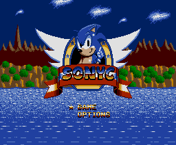
¡Bienvenido a la isla de Sonyc! En este intrincado escenario va a tener lugar una de las aventuras más excitantes que nunca se han creado para el estándar MSX. Prepárate para correr a velocidad de vértigo, desafiar la ley de la gravedad con impresionantes saltos, explorar grutas congeladas, recorrer un bosque de árboles gigantes, pasearte entre palmeras tropicales, luchar contra feroces enemigos, recoger cientos de anillos y hasta buscar un tesoro! Todo esto y muchísimo más es lo que te espera en SONYC.
Este es el primer juego que realmente explota las características técnicas del chip de vídeo V9958. Hasta ahora los juegos se limitaban tan solo en mostrar algunas pantallas en miles de colores, pero por fin un juego aprovecha la característica más potente de este VDP: un scroll ultrarrápido y suave en todas direcciones, lo que permite que SONYC sea uno de los juegos más rápidos en el ámbito técnico y de jugabilidad jamás creado para un ordenador de 8 bits.
SONYC requiere un equipo mínimo para funcionar. Lamentablemente este juego NO funciona en los MSX de segunda generación y es exclusivo para usuarios de MSX2+ y MSX turbo R, aunque sí funciona en los MSX2 equipados con el chip de vídeo V9958. Los requerimientos mínimos son:
Opcionalmente también es soportado Moonsound. Moonsound es un sistema de sonido basado en el chip de Yamaha OPL4 que proporciona una excepcional calidad de sonido estéreo en MSX utilizando tecnología de tabla de ondas. En caso de disponer de Moonsound y MSX-Music, SONYC utilizará en primero para reproducir el sonido, obteniendo una calidad muy superior de música y efectos durante el juego.
Nota para los usuarios de MSX2+
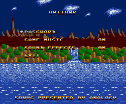
Este juego ha sido desarrollado para funcionar en ordenadores MSX de 8 y 16 bits. Sin embargo, el máximo rendimiento se obtiene sólo con ordenadores MSX turbo R, capaces de trabajar hasta 8 veces más rápido que un MSX2+ normal. Por ello, este juego está optimizado para MSX turbo R y puede funcionar indebidamente en MSX inferiores. Para subsanar este problema, se pueden desactivar la música y los efectos de sonido durante el juego a través del menú de opciones. Si durante el juego la pantalla parpadea o el scroll no es suave, se puede descargar el trabajo de la CPU jugando sin sonido, con lo cual los movimientos de la pantalla serán procesados correctamente. No obstante, el juego es perfectamente jugable en la mayoría de los casos.
EL JUEGO
SONYC consta de 4 mundos divididos en 3 fases. Cada uno de ellos forma parte de la isla en la que se desarrolla el juego. El juego tiene un transcurso lineal, por lo que no se puede jugar una fase antes que otra. Las cuatro áreas de las que consta la isla son:
LAS PALMERAS
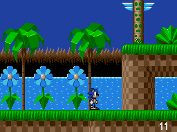
Esta zona se caracteriza por los desniveles, las cascadas y las corrientes de aire. Ayudate de estas últimas para explorar nuevos territorios.
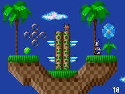
Al final de esta zona se encuentra su guardián; un gran MOAI que no se sabe como llegó hasta allí. Guarda celosamente la entrada a la prfondidades de la tierra. Nadie ha conseguido pasar.
EL HIELO
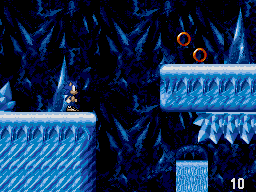
El frío y la oscuridad será tus compañeros de viaje en esta ocasión. Estas grutas subterráneas fueron creadas por las corrientes de magma que hace siglos fluyeron por aquí.
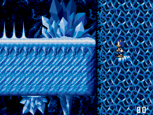
El frío y el tiempo han esculpido en el duro hielo bellas formas que adornan la zona. Pero cuidado, algunas de ellas son peligrosas, como las afiladas estalacmitas. Una caida sobre ellas sería fatal.
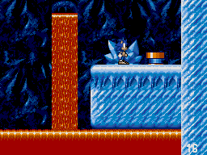
A pesar de que ha mucho tiempo, hay zonas en la que aún fluye el magma. Mucho cuidado con acercarse demasido, o pasarás demasiado calor.
LAS RUINAS
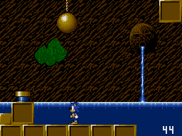
Hace mucho tiempo, en esta zona vivió una próspera civilización que acumulo incontables riquezas. Aún hoy se desconocen las causas por las que esta civilización desapareció.
Hoy sólo nos quedan sus ruinas.
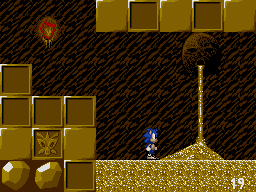
Cuenta la leyenda que en el interior de estas ruinas existe un tesoro de incalculable valor, custodiado por un temible dragón. Muchos fueron los que intentaron apoderarse de él, pero ninguno lo consiguió.
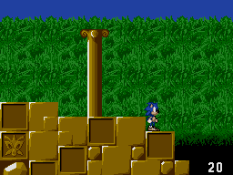
Esta zona se caracteriza por sus laberintos, su pasajes secretos y sus ocultos dispositivos que activan viejos mecanismos.
EL BOSQUE
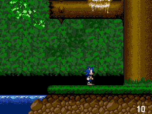
Esta es la última zona del juego. Aquí tendrás que orientarte muy bien para no perderte entre las ramas de los gigantescos árboles que poblan el bosque.
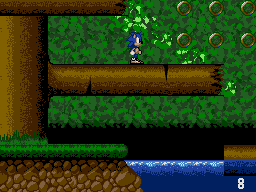
Muchos de ellos están dañados debido a que el guardían de la zona, devastó el lugar echando a los animales que allí vivían. Aún hoy pueden verse los efectos en los árboles; casi todos tienen sus ramas totas, y por sus heridas brota la pegajosa resina que dificultará tus movimientos.
LAS FASES DE BONUS
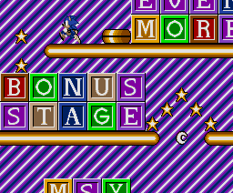
Pues sí, también hay fases de bonus. Tras acabar con el guardián de cada zona accederás a una de estas fases. Dispondrás de 60 segundos para recoger tantas estrellas como puedas (recuerda que por cada 100 obtendrás una vida extra). Los muelles te ayudarán (o no) a conseguir tu meta lanzándote a lugares antes inaccesibles.
Para ponerte en contacto con los creadores del juego escribe a:
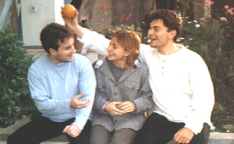
Elvis Gallegos Manuel Pazos